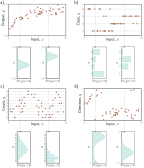
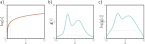

Loss Functions
Maximum likelihood
Consider a model \(f[x,\phi]\) with parameters \(\phi\) that computes an output from input \(x\). Until now, we have implied that the model directly computes a prediction y. We now shift perspective and consider the model as computing a conditional probability distribution \(Pr(y|x)\) over possible outputs \(y\) given input \(x\).
The loss encourages each training output \(y_i\) to have a high probability under the distribution \(Pr(y_i|x_i)\) computed from the corresponding input \(x_i\).

Predicting distributions over outputs.
Regression task, where the goal is to predict a real-valued output y from the input \(x\) based on training data \({x_i, y_i}\) (blue points). For each input value \(x\), the machine learning model predicts a distribution \(Pr(y|x)\) over the output \(y \in \mathbb{R}\) (red curves show distributions for \(x=2.0\) and \(x=7.0\)). Minimizing the loss function corresponds to maximizing the probability of the training outputs \(y_i\) under the distribution predicted from the corresponding inputs \(x_i\).
To predict discrete classes \(y \in {1, 2, 3, 4}\) in a classification task, we use a discrete probability distribution, so the model predicts a different histogram over the four possible values of \(y_i\) for each value of \(x_i\).
To predict counts \(y \in \{0, 1, 2, . . .\}\) and direction \(y \in (−\pi, \pi]\), we use distributions defined over positive integers and circular domains, respectively.
Computing a distribution over outputs
This shift in perspective raises the question of exactly how a model \(f[x,\phi]\) can be adapted to compute a probability distribution. The solution is simple. First, we choose a parametric distribution \(Pr(y|θ)\) defined on the output domain y. Then we use the network to compute one or more of the parameters \(θ\) of this distribution.
For example, suppose the prediction domain is the set of real numbers, so \(y \in R\). Here, we might choose the univariate normal distribution, which is defined on \(R\). This distribution is defined by the mean \(\mu\) and variance \(\sigma^2\), so \(\theta= \{\mu,\sigma^2\}\). The machine learning model might predict the mean \(\mu\), and the variance \(\sigma^2\) could be treated as an unknown constant.
Maximum likelihood criterion
The model now computes different distribution parameters \(\theta_i = f[x_i,\phi]\) for each training input \(x_i\). Each observed training output \(y_i\) should have high probability under its corresponding distribution \(Pr(y_i|\theta_i)\).
Hence, we choose the model parameters \(\phi\) so that they maximize the combined probability across all I training examples:
\[\begin{eqnarray}\label{eq:loss_max_like1} \hat{\boldsymbol\phi} &=& \mathop{\rm argmax}_{\boldsymbol\phi}\left[\prod_{i=1}^{I} Pr(\mathbf{y}_{i}|\mathbf{x}_{i})\right]\nonumber\\ &=& \mathop{\rm argmax}_{\boldsymbol\phi}\left[\prod_{i=1}^{I} Pr(\mathbf{y}_{i}|\boldsymbol\theta_{i})\right] \nonumber \\ &=& \mathop{\rm argmax}_{\boldsymbol\phi}\left[\prod_{i=1}^{I} Pr(\mathbf{y}_{i}|\mbox{\bf f}[\mathbf{x}_{i},\boldsymbol\phi])\right]. \end{eqnarray}\]
The combined probability term is the likelihood of the parameters, and hence equation above is known as the maximum likelihood criterion.
Here we are implicitly making two assumptions.
- We assume that the form of the probability distribution over the outputs \(y_i\) is the same for each data point.
- We assume that the conditional distributions \(\Pr(y_i|x_i)\) of the output given the input are independent, so the total likelihood of the training data decomposes as:
\[\begin{eqnarray} Pr(\mathbf{y}_{1},\mathbf{y}_{2},\ldots, \mathbf{y}_{I}|\mathbf{x}_{1},\mathbf{x}_{2},\ldots,\mathbf{x}_{I}) = \prod_{i=1}^{I} Pr(\mathbf{y}_{i}|\mathbf{x}_{i}). \end{eqnarray}\]
Maximizing log-likelihood
The maximum likelihood criterion is not very practical. Each term \(\Pr(y_i|f_{\phi}[x_i])\) can be small, so the product of many of these terms can be tiny. It may be difficult to represent this quantity with finite precision arithmetic.

The log function is monotonically increasing.
That is, if \(z >z'\), then \(log[z]>log[z']\).
It follows that the maximum of any function g[z] will be at the same position as the maximum of log[g[z]].
A function \(g[z]\).
The logarithm of this function \(log[g[z]]\). All positions on g[z] with a positive slope retain a positive slope after the log transform, and those with a negative slope retain a negative slope. The position of the maximum remains the same.
Fortunately, we can equivalently maximize the logarithm of the likelihood:
\[\begin{eqnarray}\label{eq:loss_max_like2} \hat{\boldsymbol\phi} &=& \mathop{\rm argmax}_{\boldsymbol\phi}\left[\prod_{i=1}^{I} Pr(\mathbf{y}_{i}|\mbox{\bf f}[\mathbf{x}_{i},\boldsymbol\phi])\right] \nonumber \\ &=& \mathop{\rm argmax}_{\boldsymbol\phi}\left[\log\left[\prod_{i=1}^{I} Pr(\mathbf{y}_{i}|\mbox{\bf f}[\mathbf{x}_{i},\boldsymbol\phi])\right]\right]\nonumber \\ &=& \mathop{\rm argmax}_{\boldsymbol\phi}\left[\sum_{i=1}^{I} \log\Bigl[Pr(\mathbf{y}_{i}|\mbox{\bf f}[\mathbf{x}_{i},\boldsymbol\phi])\Bigr]\right]. \end{eqnarray}\]
This log-likelihood criterion is equivalent because the logarithm is a monotonically increasing function: if \(z>z'\), then \(\log[z] >\log[z']\) and vice versa.
It follows that when we change the model parameters \(\boldsymbol\phi\) to improve the log-likelihood criterion, we also improve the original maximum likelihood criterion.
It also follows that the overall maxima of the two criteria must be in the same place, so the best model parameters \(\hat{\boldsymbol\phi}\) are the same in both cases.
However, the log-likelihood criterion has the practical advantage of using a sum of terms, not a product, so representing it with finite precision isn’t problematic.
Minimizing negative log-likelihood
Finally, we note that, by convention, model fitting problems are framed in terms of minimizing a loss. To convert the maximum log-likelihood criterion to a minimization problem, we multiply by minus one, which gives us the negative log-likelihood criterion:
\[\begin{eqnarray} \hat{\boldsymbol\phi} &=& \mathop{\rm argmin}_{\boldsymbol\phi}\left[-\sum_{i=1}^{I} \log\Bigl[Pr(\mathbf{y}_{i}|\mbox{\bf f}[\mathbf{x}_{i},\boldsymbol\phi])\Bigr]\right]\nonumber \\ &=& \mathop{\rm argmin}_{\boldsymbol\phi}\Bigl[L[\boldsymbol\phi]\Bigr], \end{eqnarray}\]
which is what forms the final loss function L[ϕ].
Inference
The network no longer directly predicts the outputs \(y\) but instead determines a probability distribution over \(y\).
When we perform inference, we often want a point estimate rather than a distribution, so we return the maximum of the distribution:
\[\begin{eqnarray} \hat{\mathbf{y}} = \mathop{\rm argmax}_{\mathbf{y}}\Bigl[Pr(\mathbf{y}|\mbox{\bf f}[\mathbf{x},\hat{\boldsymbol\phi}])\Bigr]. \end{eqnarray}\]
It is usually possible to find an expression for this in terms of the distribution parameters \(\theta\) predicted by the model. For example, in the univariate normal distribution, the maximum occurs at the mean \(\mu\).
Recipe for constructing loss functions
The recipe for constructing loss functions for training data \(\{x_i,y_i\}\) using the maximum likelihood approach is hence:
Choose a suitable probability distribution Pr(y|θ) defined over the domain of the predictions y with distribution parameters θ.
Set the machine learning model \(f_{\phi}[x]\) to predict one or more of these parameters, so \(\theta= f_{\phi}[x]\) and \(Pr(y|\theta) = Pr(y|f_{\phi}[x])\).
To train the model, find the network parameters \(\hat{\boldsymbol\phi}\) that minimize the negative log-likelihood loss function over the training dataset pairs \(\{x_i,y_i\}\):
\[\begin{eqnarray} \hat{\boldsymbol\phi} = \mathop{\rm argmin}_{\boldsymbol\phi}\Bigl[L[\boldsymbol\phi]\Bigr] = \mathop{\rm argmin}_{\boldsymbol\phi}\left[-\sum_{i=1}^{I} \log\Bigl[Pr(\mathbf{y}_{i}|\mbox{\bf f}[\mathbf{x}_{i},\boldsymbol\phi])\Bigr]\right]. \end{eqnarray}\]
- To perform inference for a new test example \(x\), return the value where this distribution is maximized.